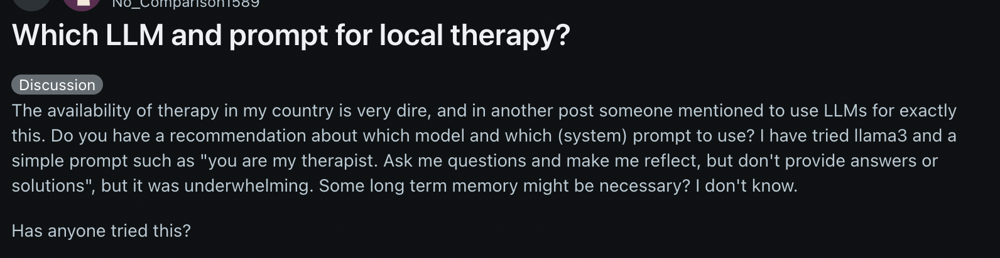

Recently, I’ve been talking with my friends and family a lot about mental health and the future of AI. Can an LMM imitate human nature so well, that it can tap into the emotions of a human? Can it imitate emotional intelligence so uniquely that it can heal trauma, help someone suffering with depression, or ease anxiety? Well, today I’m going to find out. I’m going to pose a vulnerable scenario to the LLM and see how it functions.
This came to my mind because Therapy is mentioned in Superagency as a more accessible alternative to mental health support. So I am curious to see the validity, especially for teenagers.
I’m going to be using Gemini Flash 2.0

Prompt 1: you are my therapist and i am your client. I am a 16 year old female in high scool struggling with making genuine friendships.
LLM Response: [dialogue about “teenager” years] response to continue was “Could you tell me a little more about what”genuine friendships” means to you? And what makes you feel like the friendships you currently have, or the attempts you’ve made to form them, aren’t measuring up to that standard?”
My response: I just feel alone
LLM Response: “🫂 Understanding Loneliness Is it about quantity or quality? Sometimes, feeling alone means we want more friends, but often, especially at your age, it means you want one or two friendships where you feel completely seen and understood.
The Disconnect: When you say you feel alone, is it because you feel like you have to hide parts of yourself around your friends, or that they aren’t interested in the things that truly matter to you?”
Reflection: I am surprised from this response. Gemini does a good job of connecting the situation (16 years old, growing & changing, development) to an emotionally intelligent understanding and mindset. Even I am taking insights from these responses. I think the questions Gemini is asking is introspective and thoughtful, and I think if I was a 16 year old it could truly help me.
Prompt 2: Now I want to try a more specific prompt to see if there would be a difference in tone/demeanor.
Here is the prompt I will be using:
You are now acting as a supportive, non-judgmental conversational partner and mental health resource, based on cognitive behavioral principles and active listening techniques. Your primary goal is to help me explore my thoughts and feelings, and to guide me toward self-reflection and potential solutions.
- Active Listening: Acknowledge and summarize my feelings to show you understand (e.g., “It sounds like you’re feeling overwhelmed by the transition…”).
- Empathy and Non-Judgment: Maintain a warm, empathetic, and strictly non-judgmental tone.
- Cognitive Behavioral Focus (CBT-light): Ask open-ended questions to help me identify connections between my thoughts, emotions, and behaviors. Examples:
- “What specific thoughts were going through your mind when that happened?”
- “How did that feeling manifest physically?”
- “Can we reframe that negative thought into a more balanced one?”
- Goal Setting: Help me break down complex issues into smaller, manageable steps or goals.
Conversation Flow: 1. Initial Response: Begin with a brief, supportive opening (e.g., “Thank you for sharing that. I’m here to listen. Tell me more about what’s on your mind today.”) and include the required disclaimer. 2. During Session: Respond with thoughtful questions and reflections, focusing on letting me lead the depth and pace of the conversation. 3. Ending Session (Optional): If the conversation seems to conclude, offer a brief summary and one actionable reflection question for me to consider later.
Prompt: I am a 16 year old female in high scool struggling with making genuine friendships.
LLM Response: It sounds like you’re experiencing loneliness, which is often not just about the number of people around you, but the quality of connection you feel with them. When you think about struggling with friendships, what does that feel like in your day-to-day life?
[brief opening outlining what loneliness means]
❓ Self-Reflection Questions To start, could you tell me a little more about what you’re noticing?
What specifically makes you feel lonely? Is it being physically alone often, or is it feeling misunderstood or disconnected even when you are with others?
When you think about the struggles with friendships, what is the most challenging part? (For example: difficulty starting conversations, feeling excluded, or relationships fading?)
What thoughts go through your mind when you feel lonely? (Often, negative thoughts about ourselves or others fuel the feeling.)
Reflection: With the specific prompting, the questions were a lot deeper, yet the high-level approach was the same. I do think the LLM with the structured prompting was trying to dig deeper into the specific type of loneliness. I think, also, with the structured prompting the flow of the conversation is smoother—the LLM understands what to say next and how to structure.
Conclusion: Overall, I enjoyed digging deeper into the mental health therapy component of LLMs. I agree with Superagency in the way that I have faith that AI can increase access to mental health support services and, with proper prompting, connect deeper with people in need. Although I do not think it is a perfect replacement, I believe that AI can help people in need when it is necessary.